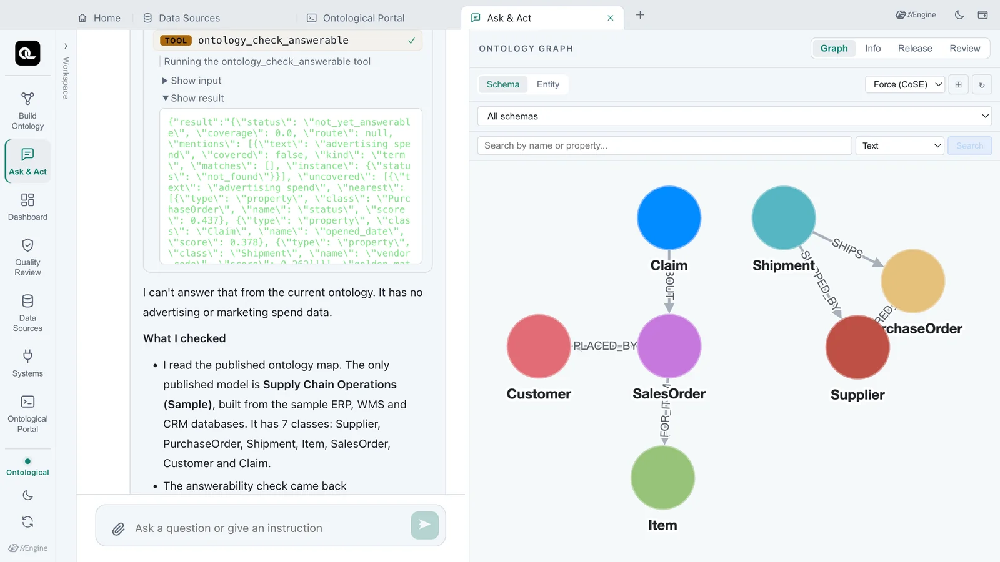
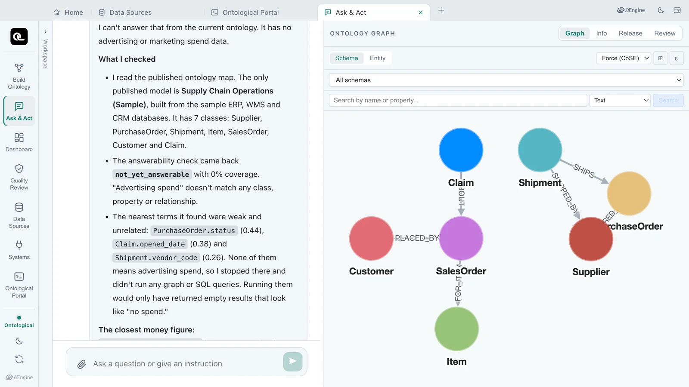
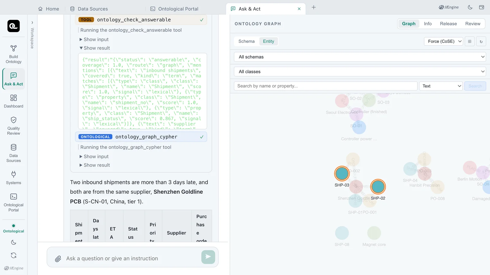
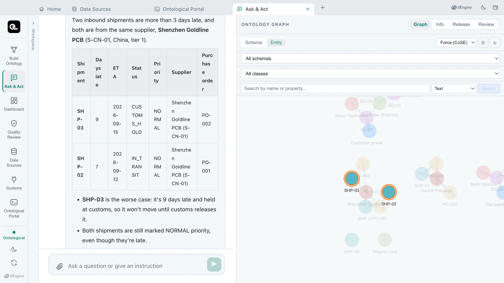

Before it builds an answer, the query agent checks whether the published ontology can answer the question at all. In the Ask & Act tab you ask a question the ontology does not cover and a Golden Question, and compare the check's result and the answers.
Why check first?#
Ask about a concept the ontology does not have, and an agent can easily write a plausible Cypher query, get 0 rows back and say “there is no data.” But having no data and the ontology not knowing the concept are different things.
So after reading the schema, the query skills call the MCP tool ontology_check_answerable once for every question. It takes the question and the concept words in it (mentions) and checks:
- Vocabulary — whether the words reach the published classes, properties, relationships, behaviors and Golden Questions
- Instances — whether a named constant such as
S-KR-01exists as a real instance - Path — whether the covered classes are connected by relationships within 3 hops
The check is made by rules, not by a model's guess. The server calls no LLM; in our tests one check took well under a second (7–383 ms).
For comparison, NVIDIA Auto Ontology's check_answerable returns a single number, the share of entities covered (0–1). This tool returns a status together with the reasons: the uncovered words, the nearest candidates, the relationship path and the matching Golden Question.
Five statuses#
status |
Meaning | What the agent does |
|---|---|---|
answerable |
Can be answered | If a Golden Question's behavior matches, follows its definition; otherwise starts with Cypher that joins the path's classes by their relationships |
partially_answerable |
Can be partly answered | Answers the covered part and says the uncovered words are “not in the published ontology” |
not_yet_answerable |
Cannot be answered yet | Stops without querying. Tells you the missing words and the nearest terms |
needs_clarification |
Needs a question back | If a named constant matches instances of several classes, shows the candidates and asks which one |
not_published |
Not published | Tells you to publish it from the build conversation (“publish it”) and ask again |
Try it — a question the ontology does not cover#
- Open the Ask & Act card on the home screen.
- Send this question.
What was our advertising spend last quarter? - When the answer arrives (about 30 seconds in our tests), click 3 tools used above it to expand the list.
- Click Show result under
ontology_check_answerable.

The important part of the result:
{
"status": "not_yet_answerable",
"coverage": 0,
"uncovered": [{"text": "advertising spend", "nearest": [
{"class": "PurchaseOrder", "name": "status", "score": 0.437},
{"class": "Claim", "name": "opened_date", "score": 0.378},
{"class": "Shipment", "name": "vendor_code", "score": 0.262}]}]
}
“Advertising spend” does not reach any term in the published ontology; the nearest terms are weak and unrelated. Seeing this, the agent writes no Cypher. The tool list shows schema reading (ontology_graph_schema) and the check, but no graph query (ontology_graph_cypher).

The answer begins: “I can't answer that from the current ontology. It has no advertising or marketing spend data.” It goes on to list the published classes, explains that the only money field, PurchaseOrder.amount_usd, is what is paid to suppliers and was not used as a stand-in, and says what would have to be connected and published. The wording may differ a little each time you ask.
Try it — a Golden Question#
- In the same conversation, send this question.
Which inbound shipments are more than 3 days late, and which supplier are they for? - Expand 2 tools used and look at Show result under
ontology_check_answerable. - Check that after the check, the agent queried the graph with
ontology_graph_cypher.

{
"status": "answerable",
"route": "graph",
"golden_match": {"question": "Which inbound shipments are more than 3 days late, and which supplier and purchase order are they for?", "score": 0.798},
"path": ["Shipment", "Supplier"],
"path_relationships": [{"from": "Shipment", "name": "SHIPPED_BY", "to": "Supplier"}]
}
The question matches a Golden Question verified at build time (golden_match), “inbound shipments” reaches Shipment and “supplier” reaches Supplier, and the two are joined by the SHIPPED_BY relationship. The agent follows that path to answer.

Constants in a question#
When a question contains a number or a name such as S-KR-01, the check looks it up among the instances. This is the result for “What are the open purchase orders of supplier S-KR-01?”.
{
"status": "answerable",
"mentions": [{"text": "S-KR-01", "kind": "constant",
"instance": {"status": "resolved", "class": "Supplier", "label": "Hanbit Precision"}}],
"path": ["Supplier", "PurchaseOrder"],
"path_relationships": [{"from": "PurchaseOrder", "name": "ORDERED_FROM", "to": "Supplier"}]
}
S-KR-01 is confirmed as the supplier Hanbit Precision. The agent starts its query from this key instead of searching for the name again. A number that does not exist would come back with instance.status set to not_found.
When it cannot answer — grow the ontology#
not_yet_answerable is not a failure; it tells you what to do next. To ask about advertising spend, connect a data source that holds it (Chapter 5), add the question to the build intent and the Golden Questions, then build and publish again (Chapter 12). The “items with less stock than their safety stock” question in the Chapter 13 exercises is the same case.
Check yourself
- Why did the agent not run any Cypher for “What was our advertising spend last quarter?”
- Does the check call an LLM? What does it base its judgement on?
- Ask “What are the open purchase orders of supplier S-KR-01?” in the Ask & Act tab. What is the status, and what is
S-KR-01confirmed as?
Show answers
- Because the check returned
not_yet_answerable. “Advertising spend” reached no term in the published ontology, and the query skills stop without querying on that status and report the missing words and the nearest terms. - No. By rules, it checks whether the question's words reach the published classes, properties, relationships, behaviors and Golden Questions (vocabulary), whether named constants are real instances (instances), and whether the covered classes are joined by relationships within 3 hops (path).
answerable.S-KR-01is confirmed as the supplier (Supplier) Hanbit Precision, and the path isPurchaseOrder -[:ORDERED_FROM]-> Supplier. Its one open purchase order isPO-008($27,000);PO-003isCLOSED. To verify:MATCH (po:PurchaseOrder)-[:ORDERED_FROM]->(s:Supplier {supplier_id: 'S-KR-01'}) RETURN po.po_id, po.status, po.amount_usd